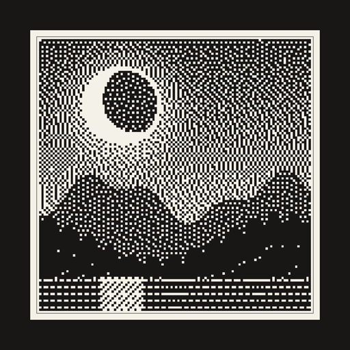

Send photos to your e-ink picture frame.
Crisp black & white. No account. No subscription.
Ordinary photos look muddy on monochrome e-ink displays. MonoFrame converts every picture with Floyd–Steinberg dithering tuned for the display's exact canvas, so your photos come out sharp and striking — like a tiny gallery print that changes whenever you want.
Pick a photo, tap Send. Your frame picks it up over WiFi on its next wake — you don't need to be home.
The frame wakes briefly, checks for a new photo, and goes back to deep sleep. E-paper holds the image with zero power.
Pair every frame in the house and send to one — or all of them at once.
Each frame gets its own secret token. No account, no email, nobody else sees your photos.
No frame yet? The app has a built-in demo frame so you can try the whole experience first.
Affordable, off-the-shelf e-ink devices. Flash one with MonoFrame's open firmware and it becomes a WiFi picture frame — pair as many as you like and send to them all at once. Want another frame supported? Request it on GitHub.